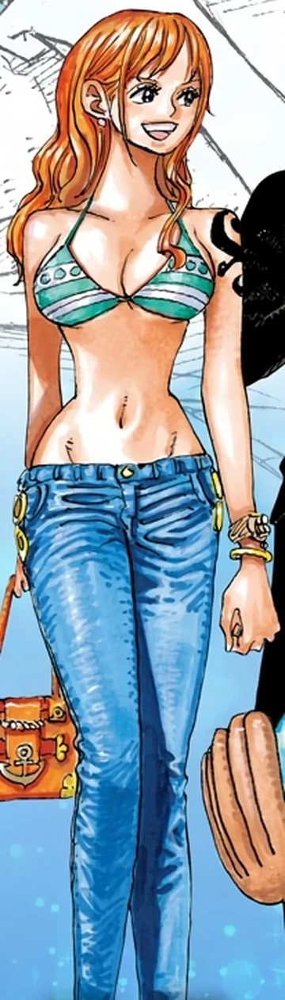
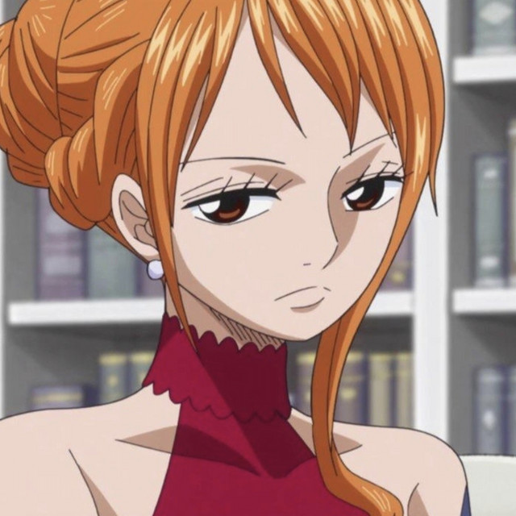

Conocida como "La Gata Ladrona", es la navegante de la tripulación. Su sueño es dibujar un mapa del mundo entero.
Nami creció en la Villa Cocoyasi tras ser adoptada por la marine Bellemere. Su pueblo fue tiranizado por los Piratas de Arlong, y Nami se vio obligada a trabajar para ellos dibujando mapas, con la promesa de comprar la libertad de su pueblo por 100 millones de berries. Conoció a Luffy al principio de su viaje y fingió unirse a él, pero tras la traición de Arlong, Luffy derrotó al hombre pez, liberando a la villa. Tras esto, Nami se unió oficialmente y de corazón a la tripulación.

Es una mujer joven y atractiva de cabello naranja y ojos marrones. En su hombro izquierdo tiene un tatuaje negro (azul en el anime) que representa una mandarina y un molinillo de papel, rindiendo homenaje a Bellemere y Genzo, reemplazando la marca de los piratas de Arlong. Suele cambiar de atuendo con mucha frecuencia.

Rol: Navegante
Apodo: La Gata Ladrona
Recompensa actual: 366.000.000 Berries
Lugar de origen: East Blue